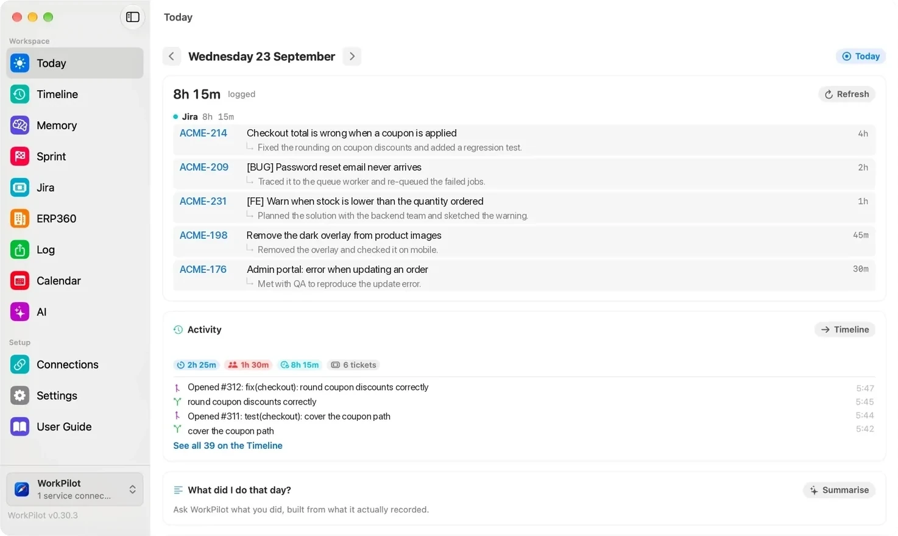
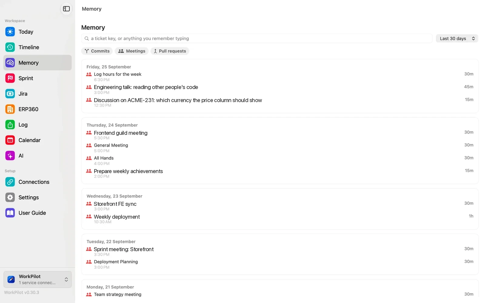
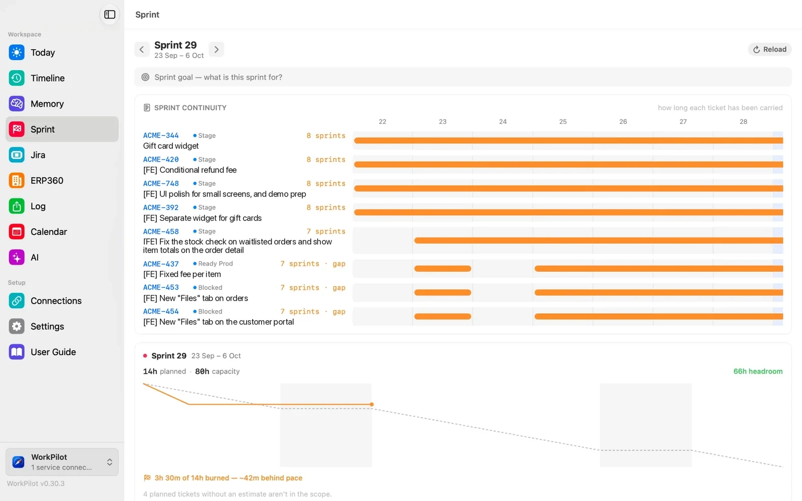
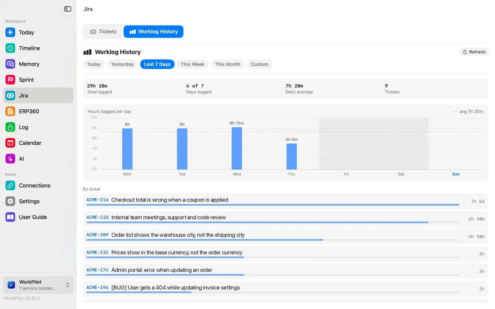
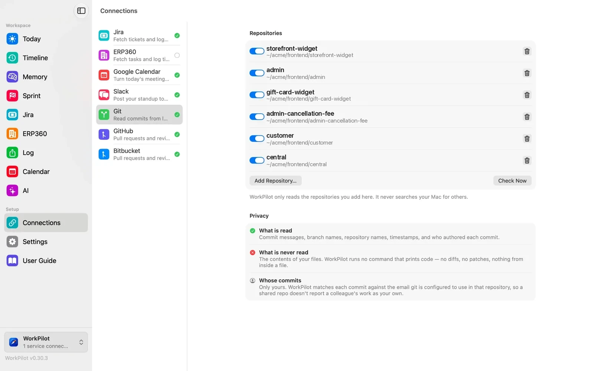
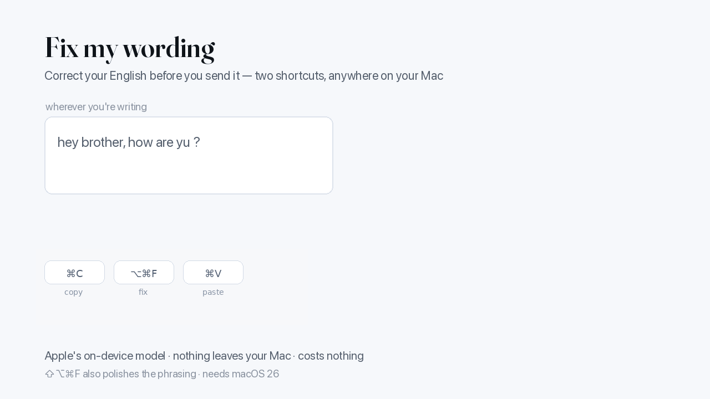
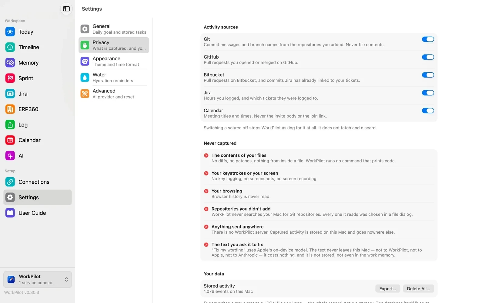

At six o'clock, Jira wants to know what you did. WorkPilot already knows — it has been quietly recording your commits, branches, pull requests, meetings and tickets all day, and it writes the worklog for you.

Everything WorkPilot knows comes from the tools you already use. It reads what you pushed, what you reviewed, what meetings you sat in and what tickets moved — then lines them up against the day and offers you a worklog you can actually check.
Commits, branches, pull requests, meetings and Jira activity, collected quarter-hourly into a local database and shown as an hour-by-hour timeline.
Suggested hours per ticket, with a comment drawn from your own commit messages. Nothing is written to Jira until you say so.
Yesterday, today and blockers, grouped under the real ticket titles — built from the record, not from memory.
"What was I doing last Tuesday?" Every answer is a list of things that were actually recorded, with the evidence attached.
Log time to a Jira ticket from a floating panel without leaving your editor, and jot down work that leaves no commit — a review, a call, testing.
Start, pause and switch tasks from the menu bar. It pauses itself when you lock the screen and nudges you when nothing is running.
Every number on these screens came from something that actually happened — a commit you pushed, a meeting you sat in, a ticket that moved. Sample data shown.

Every meeting, commit and pull request, kept in the order they happened. "What was I doing last Tuesday?" stops being a guess — and search takes a ticket key, or anything you remember typing.

How many sprints each ticket has been carried, which ones are blocked, and whether the burndown is keeping pace — next to what's in the sprint that never made it into your plan.

What you logged, day by day and ticket by ticket, over any range you pick. The week adds up before anyone asks you to add it up.

WorkPilot reads the repositories you add by hand, and never goes looking for others. Commit messages, branch names and timestamps — never what is inside a file.
Copy any text, press ⌥⌘F, paste. It corrects spelling, grammar and word order without touching your facts. ⇧⌥⌘F also polishes the phrasing. It runs on Apple's on-device model, so it costs nothing, works offline, and your words never leave your Mac.

A rewrite that changes a number, a ticket key, a link, someone's name or anything in backticks is thrown away and your own text is kept — the app tells you why. A tool that quietly turns "3 hours" into "a few hours" in a message to your manager is worse than no tool at all.
Jira, Git, GitHub, Bitbucket and Google Calendar each stand on their own. Give it one and it works with one. Every shortcut is yours to change or switch off.
There is no WorkPilot server and no account to create. The record of your work lives in a SQLite file in your Library folder, and nothing is uploaded anywhere.
| Never captured | The contents of your files. No diffs, no patches, no code. No keystrokes, no screenshots, no browsing history. Repositories you didn't add yourself are never searched for. |
| Your call, per source | Git, GitHub, Bitbucket, Jira and Calendar each have their own switch, and nothing is collected until you've read what each one means and agreed. |
| Fixing wording | Runs entirely on Apple's on-device model. The text is not sent anywhere — not to WorkPilot, not to Apple, not to anyone — and is not stored. |
| AI features | Optional, and off unless you turn them on. They run through the Claude CLI on your own machine using your own subscription. There is no API key inside the app. |

WorkPilot is in beta and not yet signed with a paid Apple developer certificate, so macOS will warn you the first time. Here is the honest version of what to do.
Notarized builds are coming, and then the warning disappears. Updates after the first install are one click from inside the app.
| macOS | 13 (Ventura) or later. |
| Mac | Apple silicon. |
| Fix my wording | macOS 26 or later with Apple Intelligence switched on. Everything else works without it. |
| Jira | Jira Cloud, with an API token you create yourself. |
| Price | Free while in beta. |
WorkPilot is created and maintained by Eahea Ratan. These are the people who have worked on it.